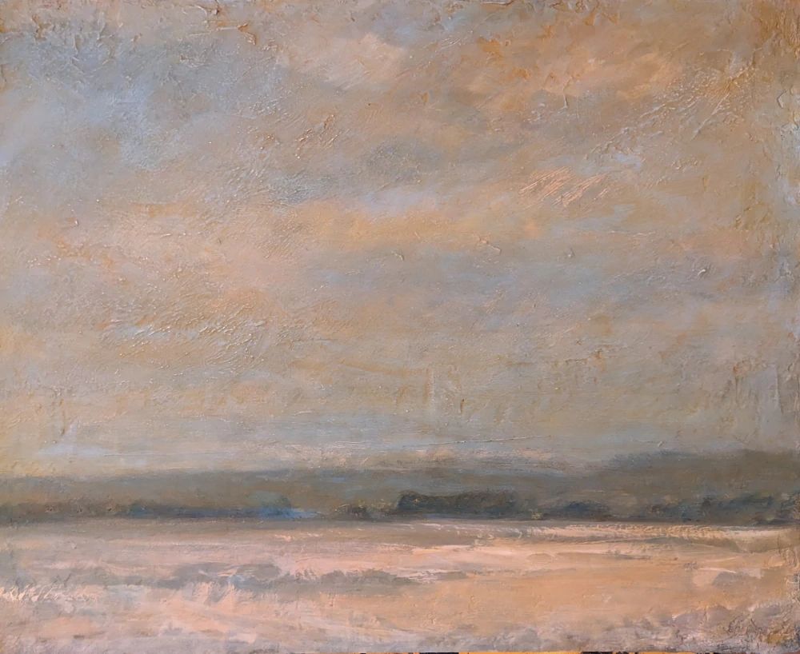
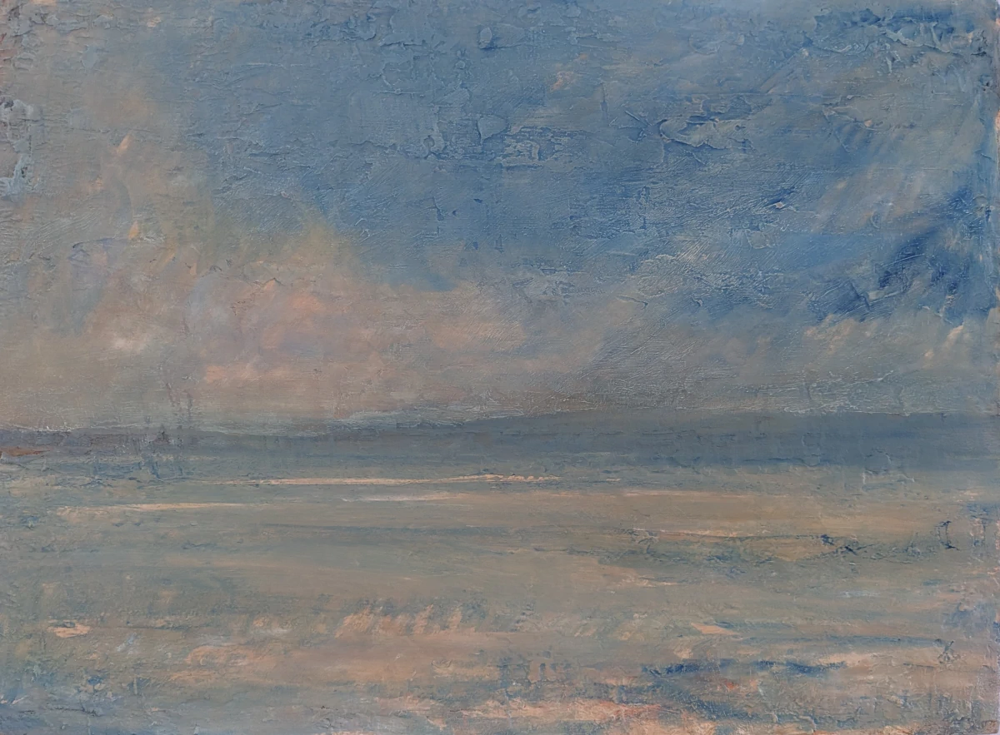

VIEW →

THE PRACTICE
Three ways of seeing,
making and listening.

BERNHARDKORADI
PAINTING
Oil paintings made from direct observation,
exploring landscape, light and atmosphere.

SELECTED WORK
ABOUT
BERNHARD KORADI
Artist · Photographer · Musician
I work across painting, photography and electronic music, moving between observation and construction, landscape and sound. Each practice begins differently, but all are concerned with atmosphere, place and the experience of seeing and listening.
READ MORE →